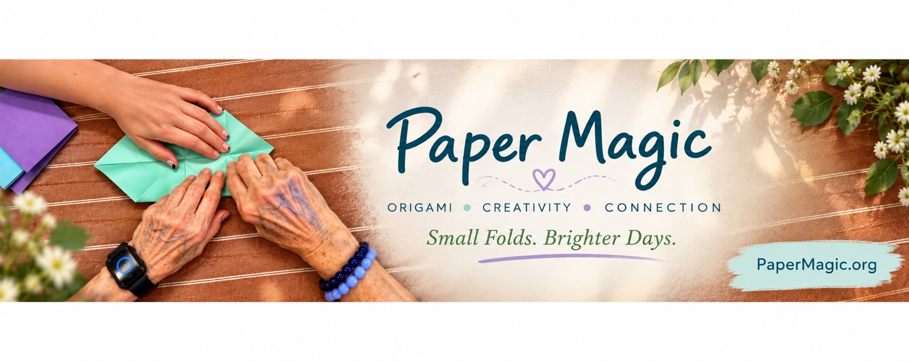
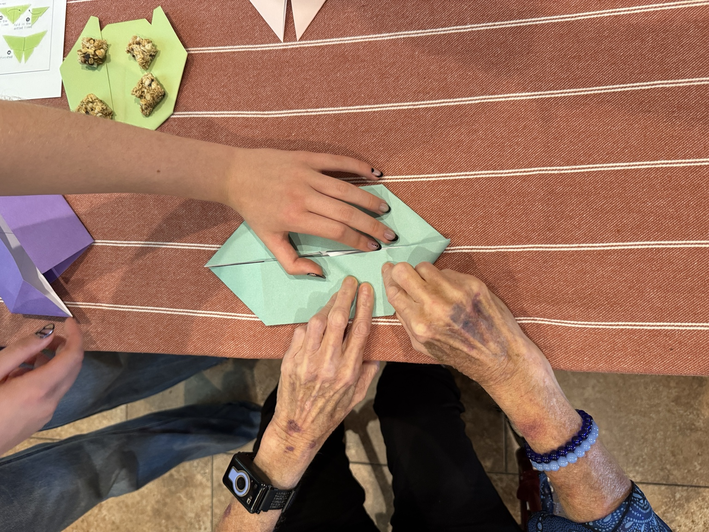

Paper Magic
Paper Magic1. Learn
Begin with short training on choosing projects, pacing an activity, helping with folds, and keeping the experience enjoyable.
Go to Training →
Origami activities created to encourage creativity, connection, and cognitive engagement for older adults, families, caregivers, and retirement communities.
Start with TrainingOur StoryPaper Magic is a collection of beautiful and fun origami projects with different levels of challenge so there can be a little something for everyone. The program is designed so caregivers, activity leaders, family members, and participants can learn how to use the activities before choosing a project.
Begin with short training on choosing projects, pacing an activity, helping with folds, and keeping the experience enjoyable.
Go to Training →Browse projects by activity difficulty, time, and the amount of assistance that may be helpful.
Browse Projects →Follow the video and step-by-step guidance. The goal is engagement and connection—not perfect folds.
Paper Magic grew from Cairstin's personal experience with her grandfather and her desire to give other families, caregivers, and communities activities they can share with the people they care about.
Meet Cairstin